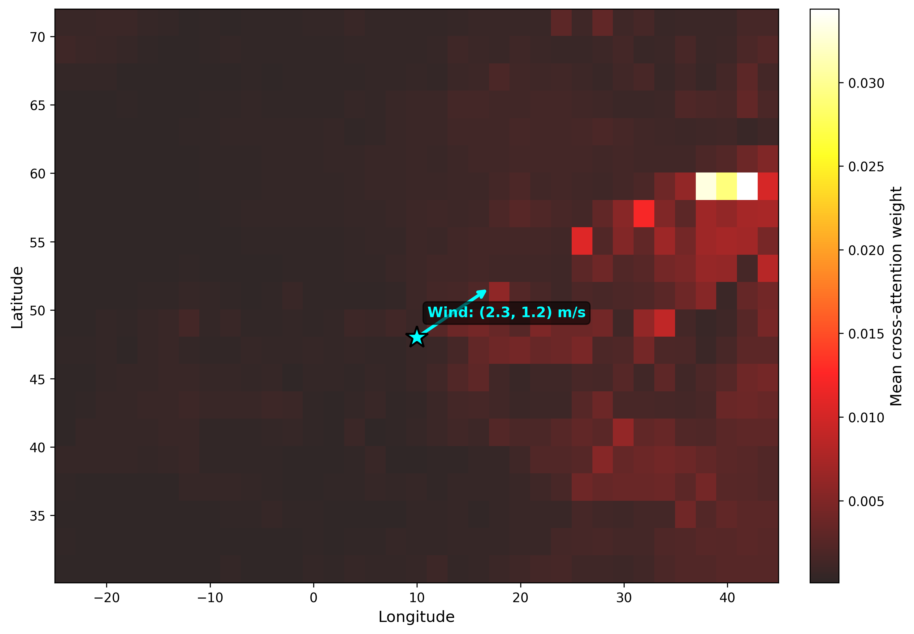
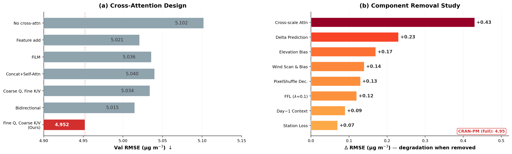
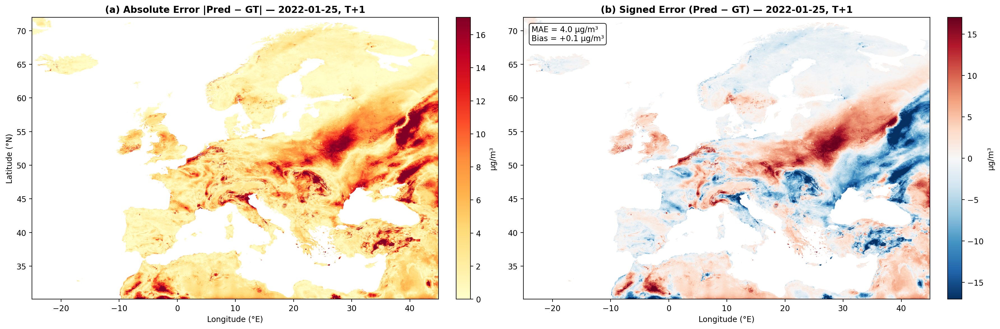
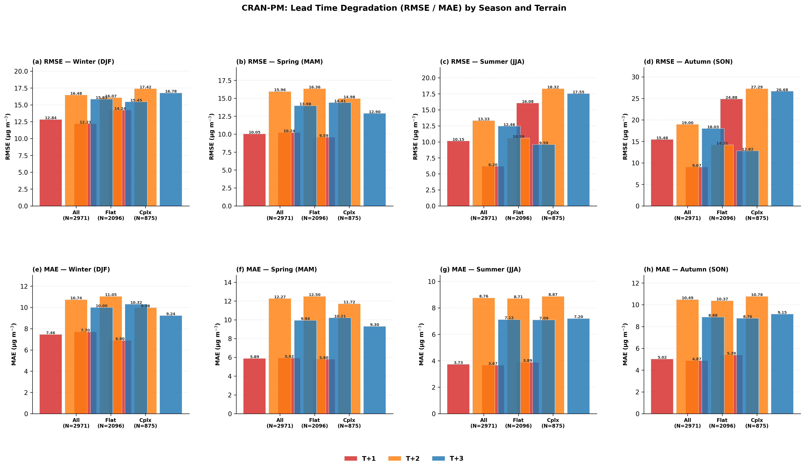
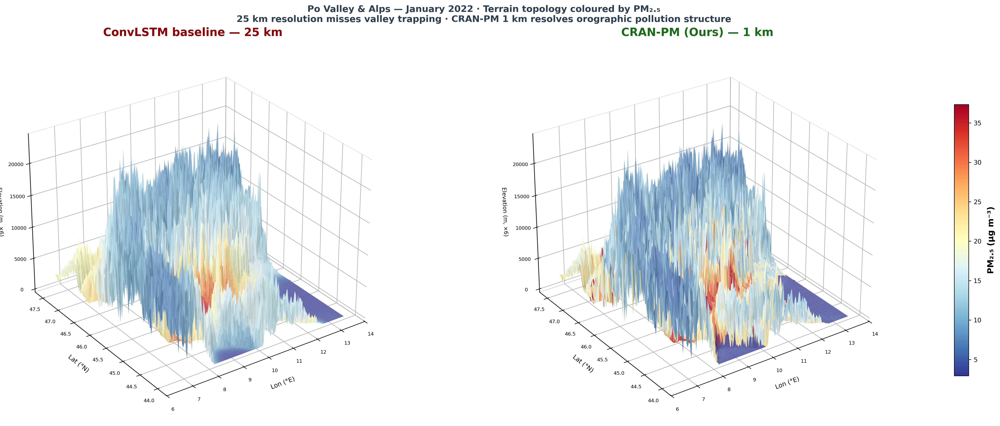

ECCV 2026 Submission
CRAN-PM
Cross-Resolution Attention Network for daily PM2.5 prediction at 1 km resolution across Europe, with zero-shot transfer to USA, Canada, and India.

Cross-Resolution Attention Network for daily PM2.5 prediction at 1 km resolution across Europe, with zero-shot transfer to USA, Canada, and India.
Abstract
We present CRAN-PM (Cross-Resolution Attention Network), a two-branch Vision Transformer that downscales coarse ERA5 and CAMS reanalysis fields (0.25°) to daily PM2.5 maps at 0.01° (~1 km) resolution across Europe. The architecture bridges the resolution gap through wind-guided cross-attention, where fine-scale local tokens query coarse global context with a directional bias aligned to atmospheric transport.
Trained on the GHAP PM2.5 dataset (2017–2021) and validated on 2022, CRAN-PM achieves state-of-the-art spatial accuracy at lead times from T+1 to T+4 days. The model generalises zero-shot to unseen continents — predicting wildfire smoke plumes over USA/Canada and pollution hotspots across the Indo-Gangetic Plain — without any fine-tuning, demonstrating that learned cross-resolution attention transfers across geographies.
A delta prediction strategy (output = PM2.5(t) + Δ) with zero-initialised decoder ensures the model starts from a persistence baseline, stabilising training and improving convergence. The CNN decoder with progressive upsampling and skip connections recovers fine-grained spatial detail lost in the patch-based transformer encoding.
Architecture
A global branch processes coarse meteorology while a local branch encodes fine-scale PM2.5 and elevation. Wind-guided cross-attention bridges the 25× resolution gap.

Figure 2. CRAN-PM architecture: global branch (ERA5 + CAMS, dim=768, depth=8) and local branch (GHAP + elevation, dim=512, depth=6) connected via cross-attention with wind-direction bias.
Method
Four design choices that enable high-resolution air quality prediction from coarse inputs.
Local tokens (1 km) attend to global tokens (25 km) through cross-attention layers. Wind-direction alignment bias ensures that local patches preferentially attend to upwind global context, following atmospheric transport physics.
Instead of predicting absolute PM2.5, the decoder outputs a residual Δ added to today's observation. Zero-initialised final convolution ensures the model starts at the persistence baseline, dramatically stabilising early training.
Bilinear upsampling from 32×32 transformer output to 512×512 through five stages (32→64→128→256→512) with residual blocks and skip connections from the local encoder, preserving fine spatial details.
MSE is computed only over land pixels where PM2.5 observations exist, preventing ocean/sea pixels from diluting the training signal. Critical for coastal and island regions across Europe.
Results
CRAN-PM evaluated on the held-out 2022 test set at 1 km resolution over all of Europe.

Figure 3. Ground truth vs. CRAN-PM predictions across Europe for the 2022 test set. The model captures regional pollution gradients, urban hotspots, and seasonal patterns at 1 km resolution from coarse ERA5/CAMS inputs.

Figure 4. Zoom-in comparisons across European regions showing fine-scale spatial structure captured by CRAN-PM. Mountain valleys, coastal gradients, and urban plumes are resolved at the kilometre scale.

Figure 5. Learned attention weights between local (1 km) and global (25 km) tokens. Attention heads specialise: some focus on nearby meteorological context while others capture long-range transport pathways aligned with wind direction.

Figure 5. Daily PM2.5 time series for 2022 (T+1) across six European regions. CRAN-PM tracks pollution episodes, seasonal cycles, and extreme events with high fidelity. Shaded bands show prediction uncertainty across the spatial domain.

Figure 6. Ablation study showing the impact of each architectural component. Cross-resolution attention, delta prediction, and wind-direction bias each contribute significantly to the final performance.

Spatially-resolved RMSE map showing where CRAN-PM performs best (coastal, rural) and where challenges remain (mountain valleys, industrial zones).
Zero-Shot Transfer
Trained only on Europe, CRAN-PM transfers zero-shot to unseen continents — capturing wildfire plumes and pollution hotspots without any fine-tuning.

Figure 8. Zero-shot prediction during a major wildfire episode over western USA and Canada. CRAN-PM correctly identifies the smoke plume extent and intensity pattern despite never seeing North American geography during training.

Figure 9. Zero-shot transfer to India capturing the persistent pollution belt across the Indo-Gangetic Plain. The model resolves the sharp gradient at the Himalayan foothills where pollutant transport is blocked by topography.

Figure 10a. Density scatter plot of predicted vs. observed annual mean PM2.5 for the USA/Canada domain (2022).

Figure 10b. Density scatter plot for the India domain (2022). Despite extreme PM2.5 levels (>150 μg/m³), CRAN-PM maintains strong correlation without fine-tuning.
Supplementary
Lead-time degradation, extreme event detection, and 3D terrain-pollution interactions.

Performance degradation from T+1 to T+4 across regions. Graceful skill decay with useful predictions maintained through 4-day horizons.

CRAN-PM's ability to capture extreme PM2.5 events (>75th percentile), critical for public health early warning systems.

3D surface rendering showing how PM2.5 accumulates in valleys and is blocked by mountain ranges. The cross-resolution attention implicitly learns these topographic effects from ERA5 elevation data.
Mathematics
The mathematical foundations behind CRAN-PM's cross-resolution prediction.
Local tokens query global context with wind-direction alignment bias.
$$\text{CRA}(Q_\ell, K_g, V_g) = \text{softmax}\!\left(\frac{Q_\ell K_g^\top}{\sqrt{d_k}} + B_{\text{wind}}\right) V_g$$Output is today's observation plus a learned residual, zero-initialised at training start.
$$\hat{y}_{t+\tau} = y_t + f_\theta\!\left(\text{Dec}\!\left(\text{CRA}(z_\ell, z_g)\right)\right), \quad f_\theta(0) \approx 0$$Directional alignment between local patch $i$ and global patch $j$ based on wind vectors.
$$B_{\text{wind}}(i,j) = \alpha \cdot \cos\!\left(\theta_{ij} - \theta_{\text{wind}}\right) \cdot \exp\!\left(-\frac{\|p_i - p_j\|^2}{2\sigma^2}\right)$$MSE computed only over land pixels with valid PM2.5 observations.
$$\mathcal{L} = \frac{1}{|\mathcal{M}|} \sum_{i \in \mathcal{M}} \left(\hat{y}_i - y_i\right)^2, \quad \mathcal{M} = \{i : m_i = 1\}$$Specifications
Architecture parameters and training configuration for reproducibility.
| Architecture | |
|---|---|
| Global Input | ERA5 + CAMS, 0.25°, 35 channels |
| Local Input | GHAP + elevation, 0.01°, 4 channels |
| Global Patches | 168 × 280 → 735 tokens (patch 8) |
| Local Patches | 512 × 512 → 1024 tokens (patch 16) |
| Global Dim / Depth | 768 / 8 layers |
| Local Dim / Depth | 512 / 6 layers |
| Cross-Attention | 2 layers, 8 heads |
| Decoder | CNN, 5-stage bilinear upsample |
| Output | 512 × 512 PM2.5 (1 km) |
| Parameters | ~47M |
| Training | |
|---|---|
| Optimizer | AdamW (β1=0.9, β2=0.999) |
| Learning Rate | 5e-5 (cosine decay) |
| Batch Size | 4 per GPU × 8 GPUs |
| Precision | bf16-mixed |
| Epochs | 300 (best at epoch ~16) |
| Train Period | 2017–2021 |
| Test Period | 2022 |
| Loss | Land-masked MSE |
| Hardware | 8× AMD MI250X (LUMI-G) |
| Framework | PyTorch + DDP |
| Data Source | Resolution | Variables |
|---|---|---|
| ERA5 | 0.25° | u10, v10, t2m, msl, sp + 5 pressure levels |
| CAMS EAC4 | 0.1° | NO2, O3, SO2, CO, PM10 |
| GHAP | 0.01° | PM2.5 (target) |
| GMTED2010 | ~250 m | Elevation |
Quick Start
Install and train CRAN-PM in a few commands.
Citation
If you find CRAN-PM useful, please cite our paper.
@article{kheder2026cranpm,
title = {{CRAN-PM}: Cross-Resolution Attention Network
for High-Resolution {PM}$_{2.5}$ Forecasting},
author = {Kheder, Ammar and others},
journal = {arXiv preprint},
year = {2026}
}